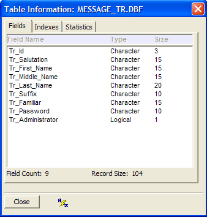
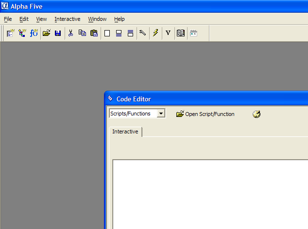
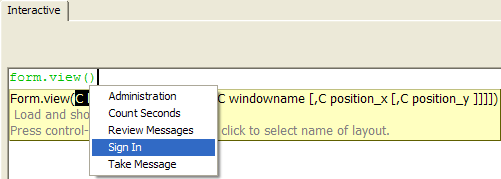
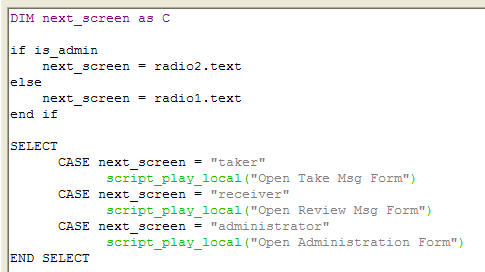
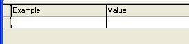

A Tutorial in Xbasic
- Introduction - Learning Xbasic
- What is Xbasic?
- Xbasic is the Brains of Alpha Anywhere
- Learning Xbasic Interactively
- Programming concepts
- Variable Types
- Explicit Declaration of Variables
- Objects, Properties, and Methods
- Objects - Learning Xbasic
- Object Events - Learning Xbasic
- Different Types of Objects in Alpha Anywhere
- Object Addresses - Learning Xbasic
- Object Aliases
- Object Events Revisited
- Xbasic Manipulation of Objects
- Watching Script Execution with the Debugger
- Variable Scoping
- Xbasic Explorer - Learning Xbasic
- Global Scripts - Learning Xbasic
- Using Action Scripting
- End Note
Introduction - Learning Xbasic
Xbasic is Alpha Anywheres built-in programming language. Out of the box, Alpha Anywhere is a powerful database and application development software package. You can use Alpha Anywhere for lots of different information management needs without doing any programming by using the Alpha Anywhere menus, commands, and Genies.
|
Genies are sequences of commands that Alpha Anywhere performs to automatically accomplish various tasks. After you answer a series of questions about what you need to do, Alpha Anywhere figures out the best way to accomplish the task and runs it. For example, Alpha Anywhere includes an Import Data Genie that guides you through incorporating existing data from external files into an Alpha Anywhere database. Genies and the Alpha Anywhere commands enable you to do a lot; Programming with Xbasic gives you even more control and options. |
However, learning Xbasic will provide you with the tools to do much more with Alpha Anywhere. Mastering Xbasic will open up vast new opportunities for you to create highly customized applications and will allow you to manipulate your data in just the way you want. And the new additions to the Xbasic commands in Version 5 provide you with the power to design and develop applications using the latest Windows techniques, structures, and tools.
Xbasic is a very rich programming language with literally hundreds of commands, so it is not possible to learn everything you can do with Xbasic in this volume. You will get a good grounding in basic programming concepts that you should understand in order to use Xbasic efficiently. You will want to refer to the Alpha Anywhere Xbasic Reference Guide to explore all the different options that Xbasic offers and you should experiment with different Xbasic techniques and commands to really learn by doing. We think programming is creative and fun and we hope you will too.
What is Xbasic?
You should already be familiar with Alpha Anywhere menus, commands, and database creation and use. For example, to create a new database you could select the File > New Workspace command from the Alpha Anywhere Main Menu.
Figure 1
When you display the Tables/Sets tab, and then the New command, Alpha Anywhere presents you with three options. You can create a New Table or a New Set using the respective commands or you can create a table or set by using the Genie. If you choose to create a table directly, Alpha Anywhere will immediately display the Table Editor where you can define the name, type, width, and other characteristics of your tables data fields. On the other hand, if you chose the Create using Genie command (see Figure 2), Alpha Anywhere will ask you what kind of table you want to create and it will automatically define a table structure for you (which you can then modify) in the Table Editor.
Figure 2
|
Code is a name for programming commands. All computers perform tasks according to the instructions that they are told to perform. You create the instructions using a computer language. The language of computer instructions of Alpha Anywhere is called Xbasic. Xbasic is made up of commands (words) that direct the computer to perform certain actions. There are certain rules (syntax) you must follow when you specify the Xbasic commands you want the computer to process. When you create a file or set of Xbasic commands we call that file an Alpha Anywhere script. The name script is related to a movie script. Just as a movie script tells the actors what to say and do, an Alpha Anywhere script contains Xbasic commands that tell the computer what you want it to do. |
Once a table is defined, you can use the other choices on the Alpha Anywhere Control Panel (see Figure 3). You can create Forms and Browses to use for viewing, entering, and modifying your data. You can design Reports, Letters, or Labels to use in reviewing, displaying, and printing your data. And you can define an Operation to manipulate, transfer, search, and summarize your data. Finally, you can create Code or programming commands. The code you create is stored in text files that are called scripts. A script (which contains a sequence of Xbasic commands) can be re-used or run. When Alpha Anywhere runs a script, it performs all the Xbasic commands that are in the script.

|
The Code Library is a repository where you can locate scripts or portions of scripts that are useful across different database applications. This allows you to easily re-use scripts without having to recreate them. |
A script is a text file containing valid (syntactically correct) Xbasic commands that Alpha Anywhere processes and executes. When you create a new script in the Control Panel, Code section, you will give the script a name (i.e., the text file that contains the Xbasic commands is named just like any other file on your computer). Alpha Anywhere scripts are stored and associated with the currently active database. However, Alpha Anywhere contains a special area called the Code Library that lets you easily share script files among different databases.
Figure 4. The Code tab shows other types of files besides scripts. functions (a special type of script) are listed here as well as Custom menus, toolbars, and graphic image files.
For example, if you open the Control Panel Code tab panel for the "Phone Messages" (or "Learning Xbasic") sample database application, you will see the names of all the scripts created for use in the application. The first script is named Chng Msgs Dsply Order (which stands for Change Messages Display Order) as shown in Figure 4 above. When you ask Alpha Anywhere to perform the commands in a script, you specify the script name.
Some scripts are already named in Alpha Anywhere. There are special scripts in Alpha Anywhere called events. Events are files containing Xbasic commands (you will learn more about events a little later), just like scripts, but they are already named and associated with specific Alpha Anywhere components.
|
Events are pre-named Alpha Anywhere scripts. You define what Xbasic commands are executed when an event is triggered, but events are already built-in (named) in Alpha Anywhere. Events are part of Alpha Anywhere components. For example, a button control on a form has events. One button control event is named OnPush (which is named for the event that occurs when you push that button). When you first create a control there are no Xbasic commands defined for the OnPush event. You add those commands to control what happens when that button is pushed. |
As you have learned, a script is a sequence or listing of Xbasic commands. Xbasic commands perform Alpha Anywhere tasks. For example, here is an Xbasic command:
|
Form.View(Administration) |
If Alpha Anywhere encounters this command in a script, it performs the action this command specifies. The first word in this command is Form which tells Alpha Anywhere you want to do something with a form. Next comes a period and then the word View. View signifies that you want a form to be displayed or viewed on the screen. Finally, in the parentheses, you specify the name of the form that you want displayed. (This name must be enclosed in parentheses.) So, assuming that a form named Administration exists in the current database, Alpha Anywhere will display that form on the screen. If there are more commands in the script, Alpha Anywhere will continue with the next command.
For example, after loading the form Administration you might want to display the last record in the table. This Xbasic command will do that:
|
Administration.Fetch_Last() |
We can use these two commands together in a complete two line Xbasic script.
|
Form.View(Administration) Administration.Fetch_Last() |
If they are saved in a script named Load Last Person, then whenever we want to display the last person using the Administration form, you can run the script Load Last Person.
You can do the very same things done by the Load Last Person script in Exercise 1 using Alpha Anywheres menus and buttons. Its a simple matter to load the Administration form using the View button on the Control Panel and then pressing the Last button to load the last record as shown in Figure 10.
But heres the interesting part! When you click on the buttons like the Last button, Alpha Anywhere is actually performing the same Xbasic commands that are in the Load Last Person script you examined above. When you press the Last button Alpha Anywhere performs the Xbasic command CURRENT_FORM_NAME.Fetch_Last() (where the actual name or reference to the current form is substituted in the Xbasic command for CURRENT_FORM_NAME ).
In fact, Xbasic is such a powerful language, that most of the Alpha Anywhere menu commands, buttons, and screens are Xbasic commands and scripts themselves. This means that the more Xbasic commands you learn, the more you can customize your applications to look, perform, and execute commands just the way you want them to.
Keep in mind that Alpha Anywhere is running Xbasic behind the scenes when you use the built-in Alpha Anywhere menus and commands. And, as you will see later on, Alpha Anywhere can actually write Xbasic code for you! Action scripting consists of Alpha Anywhere Genies that ask you what you want to accomplish and then create scripts automatically. You can modify the code to tweak it in just the way you want, but you save the time and effort of starting from scratch.
In Figure 11 you can see the choices available to you when you create a new script. In this case, we clicked on the Code Tab in the Control Panel and then clicked the New button.
When you select the New Database command, Alpha Anywhere prompts you for a database name and then brings you to the Control Panel where you can begin to design any of the components for your new database system. Typically, you begin by designing the tables that store the data pertinent to your new database.
Exercise 1 - Opening and running an existing Xbasic script
Open the "Phone Messages" (or "Learning Xbasic") database. (If the "Learning Xbasic" sample database is not included in your list of sample databases, upgrade to the latest Alpha Anywhere patch.) To open the database, display the Select Database screen, which comes up automatically when you start Alpha Anywhere. If you see the News and Updates screen, switch to the Database and Tasks tab. Click on Sample and Tutorial databases..., select Learning Xbasic, press OK, and you will create a working copy of the sample database in your documents folder.
Display the Form tab in the Control Panel.
Verify that form "Administration" exists in this database as shown in figure 5.
Now display the Code tab to see existing Xbasic scripts for the Contact Manager database.
Find the script named Load Last Person.
Left-click once on the Load Last Person script name as shown in Figure 6.
Right-click on the mouse to bring up the menu shown in Figure 7.
Select the Design command from the list in Figure 7. Selecting the Design command launches the Alpha Anywhere Code Editor shown below in Figure in Figure 8
Figure 5

Figure 6
Note the "bubble help" which appears indicating you can see more command options for working with a script by right-clicking your mouse.
Figure 7
Figure 8
In Step 8, you could have clicked the Design button above the tabs of the Control Panel. Or you could have chosen Design from the Script menu. Alpha Anywhere provides multiple options for initiating many commands.
| About The Code Editor
An editor is just like a word processing program. The Alpha Anywhere Code Editor is where you create Xbasic scripts by typing Xbasic commands on each line. The Code Editor can be directly launched in many different ways (see notes to Step 8 in the exercise). The Code Editor also loads automatically when you create scripts for Alpha Anywhere events (more on this later). In Step 8, you opened an existing script for design or editing. This script appears on the screen in the editing window. The Code Editor has two tabs. The active (foreground) tab shows the script you are currently editing. The name of the script appears in the tab. An asterisk after the name indicates the script has been changed but those changes haven't been saved. When you create a new script, the name will be Untitled_# (where # is a number, 1, 2, etc.). You name a new script when you save it by selecting the Save or Save as commands. The other tab in Figure 8 is labeled Interactive. This is a special window where you can type and execute Xbasic commands interactively or at once line by line. Using the Interactive Window allows you to immediately test and see what Xbasic commands do. You will try this out in upcoming exercises. |
Right click on the mouse to bring up the menu shown in Figure 8.
Select the Design command.
Click the Run button
 .
.
Figure 9
The Alpha Anywhere Window Bar shows three running windows. Clicking the buttons allows you to quickly switch windows.
Running a script means that Alpha Anywhere runs or executes each of the commands in the script line by line. Some commands will loop back and execute certain lines a number of times before proceeding; Other commands might extend over many lines of typed text but are treated when entered correctly as one command.
When you click on Run the Administration form loads and the last record is fetched as shown below in Figure 9. The primary index for this table is by last name, so the Fetch command loads the last record by that index.
|
Multi-tasking in Alpha Anywhere
Alpha Anywhere can run multiple tasks at the same time. In Figure 9, you see the Administration form loaded because you ran (executed) the Xbasic commands in the script that you were viewing in the Code Editor window. The Code Editor is still running and still displays the scripts you are working with. And the Control Panel window is also still running. All three of these active Alpha Anywhere tasks are shown on the Window bar near the bottom of the screen. (The Window bar itself is turned on or off using the View drop-down menu.) If you click on any of the three buttons on the window bar, your active window will change. A depressed (figuratively speaking!) button indicates the current active (foreground) window. |
Click the Code Editor button on the Window bar to switch back to the Code Editor.
You should see the same screen as shown in Figure 8 except that the Window Bar now includes a button for the Administration form displayed by running the Xbasic commands in this script.
Xbasic is the "Brains" of Alpha Anywhere
The Phone Messages database is in the \Learning Xbasic sub-directory in the Alpha Anywhere program directory. If you followed the standard installation, you should find this database in the \Learning Xbasic under your Alpha Anywhere program directory.
You can do the very same things done by the "Load Last Person" script in Exercise 1 using Alpha Anywhere's menus and buttons. It's a simple matter to load the "Administration" form using the View button on the Control Panel and then pressing the Last button to load the last record as shown in Figure 10.
Figure 10
But here's the interesting part! When you click on the buttons like the Last button, Alpha Anywhere is actually performing the same Xbasic commands that are in the "Load Last Person" script you examined above. When you press the Last button Alpha Anywhere performs the Xbasic command CURRENT_FORM_NAME.Fetch_Last() (where the actual name or reference to the current form is substituted in the Xbasic command for CURRENT_FORM_NAME ).
In fact, Xbasic is such a powerful language, that most of the Alpha Anywhere menu commands, buttons, and screens are Xbasic commands and scripts themselves. This means that the more Xbasic commands you learn, the more you can customize your applications to look, perform, and execute commands just the way you want them to.
Keep in mind that Alpha Anywhere is running Xbasic "behind the scenes" when you use the built-in Alpha Anywhere menus and commands. And, as you'll see later on, Alpha Anywhere can actually write Xbasic code for you! Action scripting are a set of Alpha Anywhere Genies that ask you what you want to accomplish and then create scripts automatically. You can modify the code to tweak it in just the way you want, but you save the time and effort of starting from scratch.
|
Action Scripting is
an alternative way to create an Xbasic script without just typing in
Xbasic commands. When you create a new script, you can choose to go
directly to the Code Editor or use the
Action Scripting Editor. |
In Figure 11 you can see the choices available to you when you create a new script. In this case, we clicked on the Code tab in the Control Panel and then clicked the New button.

Figure 11
The icon for creating a script using the Xbasic Code Editor is a page of Xbasic code. The icon for creating a script using Action Scripting is a sequence of colored symbols that represent the actions you can automatically specify to run in sequence in your script.
 Note
: In the listing of scripts and other items in the Code
tab of the Control Panel, all scripts are
represented by the colored symbols icon whichever way they were originally
created.
Note
: In the listing of scripts and other items in the Code
tab of the Control Panel, all scripts are
represented by the colored symbols icon whichever way they were originally
created.
We will be exploring script creation using both the Xbasic Code Editor and the Action Scripting Genies in exercises to come. But first, lets talk about the other options that appear in the drop-down menu shown in Figure 11, in particular the Interactive window.
|
|
Learning Xbasic "Interactively"
In Figure 11, you can see that one of the options on the drop-down menu when you select the New code button is the Interactive window. This window is a Code Editor like the one we used in Exercise 1 to open the Load Last Record script. In that exercise, we ran the script with the Run button. When the script ran, Alpha Anywhere performed all the Xbasic commands in the script in sequence (line-by-line) until the script ended. Of course, the script only had two lines of Xbasic code. But, the point is that the whole script is run at one time.
The Interactive window is different. The Interactive window will run each line of code as you enter it. A line of code is entered when you finish typing a single line and then press the Enter key. At that point, Alpha Anywhere checks the code to make sure it is valid. (If you make a spelling mistake or type an Xbasic command incorrectly you will see an error message). If it is valid, Alpha Anywhere executes the line of code right away.
For example, in Exercise 1 we looked at a script whose first line of code was:
|
Form.View("Administration") |
This line of code will immediately open the Administration form when you enter it in the Interactive Window. You will try the Interactive window in the next exercise.
|
The Interactive window can be opened by:
|
Exercise 2 - Using the Interactive window
If the Phone Messages database is not still open from Exercise 1, open it now.
Close the Administration form window if it is open.
Open the Interactive window using one of the techniques described in the side bar.
Now type the following Xbasic command form.view("Administration") into the white text area. But do NOT press Enter yet. While you are typing, you will see Alpha Anywhere's bubble help appear. For now, just ignore the bubble help and type the entire command as shown in Figure 12.
When you have entered the command exactly as above, press the Enter key.
Right-Click on the Administration window tab on the window bar at the bottom of the screen and choose the Close command.
Now locate the Clear Interactive Window button on the Menu Bar (see Figure 13) and press it.
Figure 12
Alpha Anywhere executes the command and the Administration form displays in View mode. The window you closed in Step 2 is re-opened interactively.
The form view closes and the Interactive Code Editor is reloaded.
Figure 13
|
Bubble Help is a fantastic feature of Alpha Anywhere that helps you to complete entering commands by letting you select entries from lists of Xbasic commands and lists of appropriate parameters. We will learn more about bubble help below. |
The Interactive windows contents are erased.
Type: 2+3 and press Enter.
Figure 14
|
The Clear Interactive Window button will clear the whole Interactive Window. The other two buttons next to it will clear, respectively, the window above your current line and the window below your current line. The current line is the line where your cursor is blinking. |
Nothing seems to have happened. The cursor moved to the next line, but did anything else happen? Actually the answer is yes. Each time you enter an expression, Alpha Anywhere checks to see if it is valid. In this case, you entered a perfectly valid arithmetic expression. And Alpha Anywhere even calculated the answer. However this particular command does not trigger anything to display on the screen When you entered the Form.View("...") command above, Alpha Anywhere did display the form, since that command by definition causes a form to be displayed.
In order to see the output of this expression, you must precede it with a question mark (?).
Type: ? 2+3 and press Enter.
Figure 15
Now Alpha Anywhere displays the answer on the next line. In fact, you can use the Interactive Window as a calculator by typing in any expression you like. Just remember to precede it with a question mark to see the answer.
|
An expression is like an arithmetic formula. It is a sequence of Xbasic commands and operators (like +, -, *, etc.) that is syntactically valid. Syntactically valid means you have spelled everything correctly and included any characters (like a period) that is part of the command so that Alpha Anywhere understands the command you have entered. If you type an expression or command that is invalid you will get an error message. All standard arithmetic formulas are valid expressions. Alpha Anywhere knows what to do when you ask it to calculate 2 + 3 or ((200 * 320) / 15). However, just because a command is syntactically correct does not mean it will work correctly. When you typed the command: Form.View("Administration") Alpha Anywhere found a form named Administration and performed the command. If you had typed: Form.View("Administrate") Alpha Anywhere would attempt to perform the command because it is syntactically correct. But, since there is no form in the Phone Messages database named Administrate, Alpha Anywhere would show (in the Interactive window) this error message: ERROR: Form not found:Administrate |
Programming Concepts
Programming with Xbasic means you must understand the definitions and characteristics of some specific terms and concepts. You have already seen what an Xbasic command is. And you have been introduced to some simple arithmetic expressions, which are valid Xbasic commands themselves.
|
Another term for an Xbasic command is an instruction. The command instructs Alpha Anywhere on what to do next. |
Another important concept is a variable. A variable is a storage area or location in your computer's memory. You may be familiar with memory locations in most calculators. They are often labeled M1, M2, and M3 and they enable you to store intermediate results that you can then recall and use in further calculations later.
|
A variable is a location in memory that Alpha Anywhere uses to store and recall data values. Variables are named by you. Consult Declaring a Variable for variable naming rules. Some valid variable names are: my_last_contact sum1 interest_paid_on x warranty_in_effectDifferent variables can store different types of data. So the variables above may hold these kinds of data. Other variable types are Blob, Time, Pointer (Object Reference), Image, and Function.
|
An Xbasic variable is like those calculator memory areas. However, there are important differences. In Alpha Anywhere you can define as many variables as you need, within the limits of your computers memory capacity, and you decide on the name of the variables yourself.
In addition, a variable can store different types of information. In a calculator, all the values stored in a memory location are numbers. In Alpha Anywhere, you can create variables to hold character, date, logical, and pointer values, among others, as well.
Variables are similar to fields in a database table. Both of them are storage areas for data. And both of them store data of a certain type. Variables, however, only hold their data while Alpha Anywhere is running. When your application closes, any variable values used in that application are discarded. The variable placeholder is still there, but any values stored in that variable are not. However, you can explicitly use Xbasic commands to save variable data values to a file and restore those values during another session, if necessary.
But variables are primarily used to store data that is used during an applications processing, but do not need to be kept in permanent storage. For example, you may add a variable to a form which is used to search your database. When the form is loaded, your user enters the data they are searching for into the variable. That data is used to locate the appropriate record. When the form is closed, the variable is also closed and any value (the last data searched for) in the variable is discarded.
Exercise 3 - Defining and using variables in the Interactive Window
Type in the Interactive window:
Now type:
Now type:
Now type:
To check, type:
|
my_sum = 2+3 |
When you press Enter, Alpha Anywhere moves the cursor to the next line but nothing prints.
Instead you created a variable named my_sum that is assigned (or stores) the sum of the right hand side of the expression (2+3). (The right hand side of the expression refers to the part of the line to the right of the equals (=) sign.)
Alpha Anywhere verifies that the command you typed is valid.
|
my_sum = 2+3 ? my_sum |
When you type ? my_sum and press Enter, Alpha Anywhere displays the value stored in the my_sum variable. This value is 5.
Figure 16
|
my_sum = 10 + 15 ? my_sum |
Now Alpha Anywhere displays this:
Figure 17
The value stored in the my_sum variable has changed. Now my_sum holds the value 25.
|
my_sum = my_sum + 100 |
Can you guess what the value stored in my_sum is now? If you think its 125, you are right!
|
? my_sum |
Alpha Anywhere Xbasic expressions are evaluated from right to left. This means that when Alpha Anywhere evaluates the expression you typed in step 3, the right hand side of the expression is calculated first. At this moment, while the right hand side of the expression is being evaluated, my_sum holds the value you gave it in step 2 (i.e., 25). So Alpha Anywhere adds 25 plus 100. Now Alpha Anywhere proceeds with the rest of the expression which says to assign (store) the value from the right side of the expression to the variable my_sum. So my_sum' s value (25) is replaced with the new value (125). Now the my_sum variable stores the value 125.
|
Variables are so-named because the data they hold (store) can change or vary. In this step, you changed the value stored in the variable my_sum from 5 to 25. |
Can you guess the type of the variable my_sum ?
|
A variable's type refers to the kind of data that a variable can store. |
In Step 1, you assigned a sum to a new variable named my_sum. You assigned a numeric sum (yes, there are other kinds) to my_sum. So, implicitly, you told Alpha Anywhere what kind of data the new variable will store by the type of data that you first put in that variable. This kind of variable definition is called an implicit declaration of a variables type. Alpha Anywhere figures out the variables type from the type of the data you initially put in the variable. There is also a method of explicit ly defining a variables type which we will see below.
|
An implicit declaration of a variable's type is done by assigning a value to that variable. Whatever kind of value is assigned becomes that variable's type. An explicit declaration is done with an Xbasic command named DIM which we will see below. |
Once a variable has been typed (and a variable is always typed either implicitly or explicitly when you create it), then you can only assign future values of the same type to that variable.
The Xbasic TYPEOF() function provides an easy way to determine the type of a variable.
|
A function is a special type of Xbasic command. A function calculates or transforms information and returns a value. Typically, a function will take some information in (as parameters), manipulate that information in some way and then return a result or final value. For example, there is an Xbasic function DMY(date) that returns a formatted date. The formal definition of this function (found in the Xbasic Reference manual) is: Character String = DMY(Date) This means you supply DMY with a date value the Date input parameter and it will return a character string. If you type: ? DMY ({08/01/2002}) in the Interactive Window, the DMY function will return (and Alpha Anywhere will display) the value: 01 August 2002
|
In the Interactive window type:
|
? typeof(my_sum) |
Alpha Anywhere displays:
|
="N" |
which indicates the type of the my_sum variable is numeric.
It is not possible to change the type of a variable once it has been established. You can however delete the variable from Alpha Anywhere's memory and then use the name again and create a new variable with a different type.
Variable Types
Why is a variables type important? Primarily because Alpha Anywhere has to know what kind of information you are referring to when you use a variable.
For example, suppose you have an application in which you ask someone to enter the date a bill comes due. And you want to display on a form the number of days remaining from todays date until that due date. You can create a variable, lets call it due_Date, on the form and define it as a date variable. Now Alpha Anywhere knows that the information your user will enter in this variable must be a valid date.
Also, since due_Date is a date value, you can create an expression like this:
|
due_Date date() |
to calculate the number of days between todays date (the date the application is run) and the due_Date. In this expression, an Xbasic function named DATE() returns a date value of todays (the present) date. (So on December 31, 2015, date will return {12/31/2015}.) When a minus sign is used with two date values, Alpha Anywhere knows to calculate the number of days between those two dates. And Alpha Anywhere knows due_Date holds a date value because you defined it that way.
Exercise 4, Using a date variable in an expression (with an Xbasic function)
Type the following in the Interactive Window : (Be sure to use the curly braces).
Now type:
Next type:
Next type:
Finally, type:
|
due_Date = {08-24-16} |
This defines due_Date as a date type variable and assigns it the value of August 24, 2016.
|
? due_Date |
Alpha Anywhere displays the date value currently stored in due_Date.
|
? Typeof(due_Date) |
Alpha Anywhere displays the type of the due_Date variable as D (signifying date type).
|
? date() |
On the date this was written, date() returned {10/06/2003}, so you see that the date() function returns a value of type date.
|
? due_Date - date() |
When this was written, Alpha Anywhere calculated and displayed that 392 days remained between October 6, 2016 and the due date of July 29, 2015. Figure 19 shows the sequence of commands and resulting output. Picture
Figure 19
Naming Variables
When you choose names for a variable, it is a good idea to pick a name that identifies its type and what information the variable will store. So, if you need a variable to count the number of matches in a search request, you might choose a name like: items_Found.
Some programmers make it a practice to include a letter signifying the variables type at the beginning. So they might name the variable above as: n_items_Found.
To signify that n_items_Found holds a numeric value. Some people will capitalize every word in a variable name, others like to leave the first word uncapitalized and only capitalize the rest. It makes sense to pick a system that will help you quickly remember what a variable is for when you read your program at a later time.
Explicit Declaration of Variables
Up to now, all the variables you have worked with have been declared implicitly. You created variables in the Interactive Window by simply specifying a valid variable name and then assigning it a data value. The type of the data you assigned to the variable determined its type.
There is an Xbasic command that can be used to define a variable and to specify its type. The command is DIM. When you use DIM you define a variables name and the type of data it can hold.
|
DIM comes from the word dimension. When you define a variable, it is referred to as dimming or dimensioning the variable. When you DIM a variable you are setting its dimensions. |
For example, the following lines of Xbasic define four different variables. Defining the variables with the DIM command tells Alpha Anywhere to setup storage locations with the names and to expect those variables to store data of the type specified.
|
DIM first_Name as C DIM age as N DIM date_of_birth as D DIM married as L |
Once a variable has been defined with the DIM command, it is available for use in subsequent Xbasic commands. So after issuing the commands above, you could then have two commands like this:
|
date_of_birth = {11/21/1974} age = int((date()- date_of_birth)/365.25) |
|
How the Expressions are Evaluated int((date()- date_of_birth)/365.25) Alpha Anywhere evaluates (calculates) this expression as follows. It uses these two rules.
First Alpha Anywhere evaluates the sub-expression: (date()- date_of_birth) Alpha Anywhere substitutes the appropriate date (the current date is returned by the date() function and whatever data is stored in the date_of_birth variable. This is the number of days that have passed since the birth date. Lets say date() returns {06/15/2002} and the date_of_birth variable is equal to {11/21/1974}. Then the sub-expression equals ({06/15/2002} - {11/21/1974}) or 10068 Now the expression is int(10068/365.25) Applying the parentheses rule, Alpha Anywhere calculates 100068 divided by 365.25, which equals 27.564682 Finally, the expression is now: int(27.564682) The int() Xbasic function takes a numeric value and returns the integer portion (dropping any decimal value). So the final result of the expression is: 27 This value is assigned to the age variable. |
You do not have to use DIM to define variables as we have already seen. In fact, you can also use DIM to name a new variable without specifying its data type. The data type is determined only after you assign data to that variable. So you could type the following two commands:
|
DIM age age = "Eighteen" |
The DIM command tells Alpha Anywhere to set aside storage for a variable named age. But only after the second command is processed does Alpha Anywhere know to treat age as a character data type variable.
Once a variable has been assigned a value or dimmed, it can only store data of that type. If you want to change the type of data that a variable can hold, you can use the REDIM command to redefine it. (Note: If any data is stored in the variable before you REDIM it, that data will be discarded).
Exercise 5 - Dimensioning and using variables
Using DIM to define a variable is also known as Declaring a variable. Declaring variables with DIM at the beginning of a code file is good programming practice. It makes your variables and their types explicitly known and readily apparent for someone reading your code later.
-
Declare the following variable using the DIM command.
|
DIM birthday as D |
-
Use the typeof() function to check the data type of the variable birthday.
|
? typeof(birthday) |
Alpha Anywhere displays D indicating a type of date.
-
Assign your birthday to the variable birthday (enter your own birthday or use this date).
|
birthday = {11/21/1974} |
-
Now type:
|
? Int((date()- birthday)/365.25) |
Alpha Anywhere displays your age.
-
Now type the following:
|
birthday = "Twenty-seven" |
Inside a script, Alpha Anywhere would display an error. In this environment, it sets the value of birthday to NULL.
|
? birthday = { / / } |
|
Type conversion Sometimes you may want to get data of one type out of a variable and store it in a variable that holds data of a different type. For example, suppose you have a variable defined as a character variable storing a products weight. product_Weight = 42 ' lbs You want to multiply the weight in pounds by $ .75 per pound to calculate a shipping price. You can use a type conversion function to get the numeric information from the product_Weight variable and store it in a numeric variable. The function that converts from a character string value to a numeric value is called VAL(). When VAL() is used on a character value, it looks for any numbers occurring at the beginning of the string, drops remaining characters, and then converts the number string (the number stored as Characters) to a numeric value. So VAL(product_Weight) returns the numeric value 42. If you had a numeric variable named ship_Cost you could write this expression: ship_Cost = VAL(product_Weight) * .75 to store a numeric shipping cost in the ship_Cost variable. |
Objects, Properties, and Methods
This topic explains, with a detailed example, objects, properties, and methods. If you are comfortable with these terms, you can skip this section.
Objects
An object is simply a definition.
When you refer to a particular object in Alpha Anywhere, you are defining that particular object as belonging to a category of objects that have similar characteristics that you can edit and that react to actions that you can create and control.
You can specify the appearance or display of an object by manipulating its characteristics and you can determine how an object reacts to user input by writing Xbasic scripts that control what happens when an object does something or is accessed by a user.
For example, you can think of a car as an object. You may own two cars which have similar properties and actions, but, of course, behave differently according to what those properties and actions are.
Lets say your two cars are:
Car1: Ford Focus
Car2: Masserati
Now, both of these are objects are particular objects of a certain type. They are cars. Since they are both cars you know, by definition, that they share certain characteristics.
For example, a few of their shared characteristics are:
name
color
gas_Accepted
top Speed
current_Speed
passenger_Capacity
Characteristics of objects are referred to as properties. The properties of your two car objects have values appropriate to their own characteristics. Some property values are shown below for the two cars.
Object Type: Car
|
Car Object 1 |
Car Object 2 |
||
|
Property Name |
Property Value |
Property Name |
Property Value |
|
Name |
Ford Focus |
Name |
Masserati |
|
Color |
Blue |
Color |
Red |
|
Gas_Accepted |
Regular |
Gas_Accepted |
Premium |
|
Top Speed |
95 |
Top Speed |
195 |
|
current_Speed |
0 |
current_Speed |
0 |
|
passenger_Capacity |
5 |
passenger_Capacity |
2 |
Objects 1 and 2 are both objects of type car and they both have the same collection of properties (as would all objects that are defined as Cars), though its the values of those properties that distinguish one object of the same type from another.
Objects of the same type also share actions or methods. These are things the objects do, rather than what the objects are.
In this example, all cars (or, in other words, all objects of type car) perform certain actions. These are:
|
Action (Method) Name |
What happens |
|
accelerate(pressure) |
Speed up when the gas pedal is pushed up until top speed. Also, display the current speed on the dashboard. |
|
brake(pressure) |
Slow down when the brake pedal is pushed. |
|
turn(direction, degree) |
Turn the wheels according to the direction and degree indicated by the steering wheel. |
|
Beep(pressure) |
Make a noise when the horn is pressed. |
|
monitor_Tank() |
(Ford Focus) Flash a dashboard warning light when the gas tank is less than 2 gallons full. (Masserati) Flash a dashboard warning light when the gas tank is less than 10 gallons full. |
As you can see, what happens for each action is sometimes determined by an input from the driver. The car objects acceleration action is affected by the drivers pressure on the gas pedal. This action also determines what value is stored in the current_Speed property. (I.e., methods can set the values of properties of objects). And the accelerate method uses the top_Speed property setting to limit how fast the car can go.
Other actions happen automatically without any driver input. The dashboard flashes when the gas drops below a certain level without any input from the driver as the monitor_Tank() action is continually performed for a car object. Make note of this - both car objects have the same methods. One, named monitor_Tank(), however, does a slightly different action relevant to its particular object. In fact, in Alpha Anywhere the names of the methods for an object are already determined. But we can control what actually happens when that method performs its action.
In other words, objects that are built-in to Alpha Anywhere (like a form or table) have a predetermined set of methods, but you can control what actually happens when those methods are run using Xbasic.
In summary, a car object is fully defined by these properties and methods:
|
Object Specification |
|
|
Type |
Car |
|
Properties |
name |
|
color | |
|
gas_Accepted | |
|
top_Speed | |
|
current_Speed | |
|
passenger_Capacity | |
|
Methods |
accelerate(pressure) |
|
brake(pressure) | |
|
turn(direction, rate) | |
|
beep (pressure) | |
|
monitor_Tank() | |
Objects - Learning Xbasic
So far you have learned about Xbasic variables and been introduced to using functions and expressions in Xbasic commands. Another important concept for understanding how to write Xbasic commands is an object.
All the parts of your applications written in Alpha Anywhere are objects or distinct entities. An object is a part of Alpha Anywhere that has properties (or characteristics) and methods (or scripts that do something to or with an object).
For example, tables, databases, forms, browses, reports, scripts, and even the Alpha Anywhere program itself are all objects.
You may have noticed that properties of an object are like variables. They are storage locations that hold variable data values. They are, in fact, variables that belong to and describe a specific object. In the same way, methods are like scripts. Methods are pre-named scripts that execute certain actions.
Alpha Anywhere Forms and Browses are some of the objects that you will use in Alpha Anywhere. So they have properties and methods like any other object. Setting the properties and defining the Xbasic commands that are executed by the methods are the primary means of creating a custom application in Alpha Anywhere. Now, you will look a little closer at an Alpha Anywhere object a form. You will look at the properties and methods used to build the first form of the Phone Messages application that is included in the sample databases with Alpha Anywhere. The initial form when the Phone Messages application is started is the Sign In form shown in Figure 20.

Figure 20
When the Please Login button is clicked on the Sign In form, another window appears with a prompt to enter a user ID and password as shown in Figure 21.

Figure 21
|
The "Please Login" window shown in Figure 21 is not a form object, but a window created by an Xbasic Xdialog command. Xdialog is a set of Xbasic commands that you can use to create pop-up windows to interact with users by displaying data or prompting users for information. The Xdialog component of the Xbasic language is covered in detail in the Learning Xdialog book that is part of the Alpha Anywhere documentation set. |
After a successful login, the form then appears as shown in Figure 22. You can see in comparing Figures 20 and 22 that the information that appears on the form changes depending on the users interaction with the form. And the pop-up window in Figure 21 appears only after the Please Login button on the form in Figure 20 is clicked.

All of the changes and sequence of actions that occur as this form changes are happening because either the properties of the form object are being changed or methods of the form object are being invoked (run).
In fact, many of the changes to the form shown in Figure 20 and Figure 22 are the result of changes to the properties and methods of sub-objects on the form object.
|
A sub-object is an object that is part of another object. An object, by definition, always has a collection of properties and methods that determine the characteristics and capabilities of that object. If you read the previous sidebar that used a car as an example of an object, you can think of an engine as an example of a sub-object that is part of a car object. The engine is an object itself (as are all sub-objects) and has its own properties and methods. For example, an engine might have a property named cylinders. And it might have a method named "Increase RPM (revolutions per minute)." Now an engine object can exist on its own. It does not have to be part of a car to have its own properties and methods. (Of course, you can't do much with an auto engine that's not in a car.) But, an engine object can also become part of a car object definition. When we define a car object by defining its properties and methods, we can also define sub-objects that are part of that car object. So our car object specification can be expanded to include a sub-object of type Engine as shown below. A partial Engine object specification is also shown.
An engine object exists within the car object. A method of a parent object may invoke a method of a sub-object (or child object). For example, car.accelerate(50) causes the engine.increase RPM(1000) method to execute. | |||||||||||||||||||||||||||||||||
Another term for a sub-object is child object. And, as you might expect, an object that includes or incorporates child objects is sometimes referred to as a parent object.
The Sign In form in Figures 20 and 22 is an object. It is a form object. (also referred to as an object of type form). All form objects have, by definition, the same set of properties and methods.
The way you set the characteristics of a particular forms properties and methods determines that forms appearance and functionality. This form also has numerous sub-objects. In fact, all the elements or controls that you place on a form using the Alpha Anywhere Form Design commands toolbox are objects. For example, the Sign In form in Figure 22 has a design element that is a bitmap (graphic) object. The picture of the friendly smiling message taker is a sub-object of the form itself. All of the buttons, text elements, variables and frames used in this form (the forms controls) are objects themselves (and thus sub-objects of the form). And each of these objects has its own properties and methods.
Object Events - Learning Xbasic
An event is a special type of object property that does not contain a value but actually is an Xbasic script. The Xbasic code in an event script is run when different types of events occur in the course of an object being used. Events are pre-defined for Alpha Anywhere objects. That is, there are a fixed set of events defined for a particular object type. However, you control what happens when that event occurs through the Xbasic commands that you define in an event script.
To return to our car analogy, a car object might have the following events:
Turning On The Ignition
Turning Off the Ignition
Hitting Another Car (hope this event never happens!)
When any of these events occur, the car performs certain actions. When you Turn on the Ignition, the car might perform all of these tasks:
|
Start the engine If the engine wont start, light up a dashboard light. Check the miles driven. If the miles driven is over 100,000 then Check the service engine switch. If the service engine switch has been set (meaning the engine has been serviced) then Do nothing. else if the service engine switch has not been set then Light up a Check Engine light on the dashboard Check all the fluid levels If a fluid level is too low then light up a warning light on the dashboard |
All of these five steps are executed when the Turn on the ignition event occurs. When you buy a car, all the events that the car reacts to and what happens when each event occurs is already built-in to your car by the car company. With objects in Alpha Anywhere, there is a big difference. Even though the events are pre-defined for a given object, you control what happens when a particular event occurs by telling Alpha Anywhere what Xbasic commands to execute for that event.
For example, when Alpha Anywhere displays a form object, it checks to see if any events that a form object can react to (e.g., a key press or fetching a data record) have occurred. Every object has a list of events that it can react to. But you determine what happens when that event occurs. An event is a pre-named like a form property, but what happens when that event occurs is up to you. In order for an event to cause something to happen, a script of Xbasic code must be written for that event.
For example, every form has an OnActivate event (or property ) associated with its object definition. A form is activated after it is opened when it receives focus. (Focus means that the form is currently the primary object that Alpha Anywhere is dealing with.) So when a form has focus, keyboard input is directed to that form (or to a sub-object of that form). When a form object is activated, Alpha Anywhere checks the OnActivate event. If Xbasic code has been written for the OnActivate event for that form, Alpha Anywhere runs that code. If no code has been written for that particular forms OnActivate event, then Alpha Anywhere moves on without doing anything extra even though an OnActivate event has occurred.
In the next section and exercise, you will examine the Sign In form's properties and events in more detail.
Open the Phone Messages database.
Open the Sign In form in Design mode.
From the Form menu, select Form Properties as shown in Figure 23 below.
Click the Backdrop tab and then click on the dropdown list for the Color: property.

Figure 23

Figure 24
|
Remember, there are multiple ways to navigate around Alpha Anywhere. You can also open the Form Properties window by:
|
Change the Color property to something other than "Rose".
Click on the OK button in the Form Properties window. The background color of the form should change to the color you selected.
Reopen the Form Properties window and change the background color back to "Rose".
Click OK to close the Form Properties window.
Now select Events from the Form menu. A list of all the events for this object type (form) appears as shown in Figure 25.

Figure 25
|
Note that two of the events for this form are displayed in bold and with a checkmark next to their name. Event names are displayed like this when Xbasic code has been created for that event. The OnInit event code (which you will see later in this exercise) is executed when the form is initially loaded. The OnActivate event code is executed when the form get focus. Any other events for this form would not result in any special actions since no Xbasic code has been defined for those events. All Alpha Anywhere form layout objects that you create have this same set of available events for you to customize actions for. |
Move your cursor onto the OnActivate event and select it (left-click the mouse). The Code Editor loads and displays the script that was defined for the OnActivate event as shown in Figure 26 below:
Figure 26
|
The Code Editor knows what kind of Xbasic script you are creating automatically, whether it is a standard script, an event script or a function. Note the toolbar for the Code Editor allows you to select the type of script, object and object events from drop-down lists, and the tab for the script in the editor displays the object event reference: :Sign_In.OnActivate You will learn more about object references (or addresses) later in this book. |
This is a very simple Xbasic script. There is only one Xbasic command:
|
:Sign_In.maximize() |
This command (you will learn more about the syntax of this command later) causes the Sign In form to be maximized in the Alpha Anywhere window when the Sign In form is activated.
Close the Code Editor window (click the
 in the top right corner).
The Sign In form in Design mode is displayed as in
Figure 27.
in the top right corner).
The Sign In form in Design mode is displayed as in
Figure 27.
Compare Figure 27 to Figures 20 and 22. You should notice that some of the sub-objects that are clearly part of the Sign In form in Design mode (in Figure 27) are not displayed on the form in View mode in Figure 20 and others are not displayed on the form in View mode as in Figure 22.

Figure 27
In fact, one sub-object is not displayed in either Figure 20 or 22. (This sub-object is the field control that holds the variable user_id ). The display of these sub-objects is controlled by the hide property of each object. When the hide property is checked (or True) for a particular object, that object is not displayed. By changing the hide property value between checked and cleared (or True and False) using Xbasic, you can control which sub-objects are visible on a form.
|
There are two objects on the Sign In form that overlap. One object is a text control and the other is a button control. Each of these objects has a property (hide) that controls when each object is visible on the form. When the form is initially loaded (as in figure 20) the button object, Please Login, is visible and the text control. Welcome, Username, is not shown (because its hide property is set to True). After a successful logon (as shown in figure 22), the buttons hide property has been set to True and the text controls hide property has changed to False. So even though both these objects are present (i.e., they are sub-objects) on the Sign In form, whether or not they display when the form is in View mode is controlled by their object properties. |
Different Types of Objects in Alpha Anywhere
If you have explored an Alpha Anywhere object of type form, you will have seen that a form object has certain properties, methods, and events that characterize the behavior of a particular instance of a form. For example, with a 'Sign In' form, when you change the value of the Sign In form's background color property, the appearance of the Sign In object changes. Alpha Anywhere forms have events that can be defined with Xbasic scripts. When an event happens, Alpha Anywhere performs the Xbasic commands in that event's script.
Keep in mind that Alpha Anywhere includes many different types of objects. All of these objects are components of Alpha Anywhere. Objects include: data tables, forms, browses, controls, the Alpha Anywhere program itself, the Code Editor, the Control Panel, etc. All of these objects have properties and methods. Some types of objects respond to events if you write an Xbasic script for those events. System objects are objects that are always present in Alpha Anywhere, whether you are using the software interactively or with a pre-built application. In fact, many of the objects listed above are system objects; for example the Control Panel, Status Bar, Form, Browse, Set, and Table objects, as well as the Alpha Anywhere program itself.
Objects that you create instances of (i.e implementations of that object's type) are based on the Table, Set, Operations, or any of the various Layout objects. For example, if you create a new workspace and define a new table named 'clients', Alpha Anywhere will then create a table type object named 'clients' with the same available characteristics (properties and methods) as the system Table object. Likewise, when a 'Sign In' form is created for an application, that object is based on the system form layout object. The technical term for creating your own object from an object type is called instantiating that object. The 'Sign In' form layout object is an instantiation of the form layout object type. You can create tables and sets, browses, forms, reports, labels, and letters and operation type objects in Alpha Anywhere. Alpha Anywhere also instantiates certain system objects itself, but you cannot create additional objects of that type yourself. (For example, you cannot create additional Control Panel objects). But you can manipulate the Control Panel system object through its properties and methods.
In sum,
|
A system object is an object that is built-in to Alpha Anywhere. You can't create new objects that have the same characteristics as system objects. But system objects (which allow you to control the behavior of the Alpha Anywhere program) can be referenced and controlled (for example opened and closed through Xbasic scripts. For example, in exercise 6, the Code Editor that you opened to view the Xbasic commands of the OnActivate event is a system object. There is only one "instance" of an Alpha Anywhere system object. The Code Editor is the instantiation (or instance) of the Code Editor system object. |
|
An instance of an object is an occurrence or implementation of that object type. A Rolls-Royce Cloud is an instance of a car object. The Sign In form is an instance of a form layout object. |
|
A specific object type is also known as a class or category of objects. So a particular form layout object can be spoken about as belonging to the form layout class of objects. |
Most of the objects that you will use in Xbasic scripts will be layout and table objects (or simply layouts and tables). In order to change an object's property or invoke an object method in an Alpha Anywhere Xbasic script you must know how to reference that object using object addressing.
Object Addresses - Learning Xbasic
Object addresses are basically object names. You can refer to an object in an Xbasic script by using the object name. Earlier in this book, you saw that when you use a command from the Alpha Anywhere menus, Alpha Anywhere is in fact executing Xbasic commands to carry out your request. So if you open the Phone Messages database, and highlight the Sign In form in the Form tab of the Control Panel, and then click Form > View from the Main Menu, the Sign In form will load. When you click on Form, View, Alpha Anywhere executes these three Xbasic commands:
|
Form.View("Sign In@e:\program files\a5v5\learning xbasic\message_tr.dbf") :Sign_In.resynch() :Sign_In.activate() |
These commands, in turn, invoke the View method of the Form layout system object (with a form layout name as the parameter) and then the instance of the Sign In form object. The diagram below explains the components of the first and third command lines.
The first command line breaks down as follows:

Some general rules for object addressing can be learned from these examples.
System objects are referenced by their own names; for example: "ControlPanel", "Form", "CodeEditor".
Other objects are referenced by their given names (with spaces replaced by underscores); for example: "Sign_in", "Monthly_Aging_Report", "QuickBrowse".
Objects names are followed by a period which, in turn, is followed by the property or method which you are referencing.
A colon (:) is used in front of an object name to unambiguously refer to an object that may be a sub-object of another object. (More about this below).
In this next exercise you will use the Alpha Anywhere Form, View commands and see in the script recorder the behind the scenes Xbasic commands that Alpha Anywhere generates.
Exercise 7 - Using the Script Recorder to see Alpha Anywhere Xbasic commands
Open the Phone Messages database.
Click on the Form tab of the Control Panel.
Highlight (click once on) the Sign In form. (Do not double click or the form will open. If it does, simply click on the
in the top right corner of the window to close the form).From the Main Menu, select View, then Script Recorder Window as shown in Figure 28.
Now check the Record Script check box in the Script Recorder w indow. Alpha Anywhere will now record your menu selections as Xbasic script commands.
Now click on Window, then Control Panel. The Control Panel displays. The Sign In form layout name should still be highlighted on the Forms tab.
Select Form, then View. The Sign In form appears.
Now click the Please Login button. A pop-up logon window appears. Click the Cancel button.
Click the Exit button on the form. (Do not click the X in the top right or Alpha Anywhere will close!)
Click Window, then Script Recorder. You will see the following commands in the script recorder window.
Figure 28
Figure 29
|
:Sign_In.resynch() :Sign_In.resynch() :Sign_In.activate() :Sign_In:BUTTON1.activate() :Sign_In:BUTTON3.activate() :Script_Recorder.activate() |
You should recognize some of the references to objects and methods that are shown above. Note the fourth line. In this line the BUTTON1 object (a button control) is a sub-object (or child object) of the Sign_In form object. A colon separates the BUTTON1 object and the Sign_In object. The : makes the reference to an object explicit. References to sub-objects can also be relative. A relative reference (without a preceding :) causes Alpha Anywhere to search for that object in the current container. A container is simply an object that can contain other objects. (The Alpha Anywhere program itself is the topmost container any window objects you reference are in the top container). Referring to a sub-object with a relative reference makes it easier to change your code later on or use a sub-object, such as a control, among different forms without having to change the Xbasic object references in any scripts associated with that control.
Click on the Close Recorder button in the Script Recorder toolbar to close it.
|
Explicit and relative references to sub-objects Objects that contain other objects are also referred to as containers. When you identify a sub-object in an Xbasic script, Alpha Anywhere assumes that reference is to an object in the current container. This means that you do not have to specify the container name if you are referring to a sub-object within the same container. For example, consider a form object named Elapsed Seconds that has a button (a control named BUTTON1). When pushed, BUTTON1 resets a counter of elapsed seconds and displays the seconds in another control on the same form (a field control named FIELD1). The OnPush event script for BUTTON1 has an Xbasic command:
This command, which runs the refresh method for the field control object, FIELD1, is referencing the FIELD1 control from the BUTTON1 control. Both FIELD1 and BUTTON1 are controls on the same form. They are both in the same container form layout object - Elapsed_Seconds. The Xbasic command above could have been written:
However the :Elapsed_Seconds is not necessary since the current container is :Elapsed_Seconds. If you leave off :Elapsed_Seconds, you must leave off the : (colon) in front of FIELD1. If you start an object reference with a :, Alpha Anywhere looks for the object starting at the top level (Alpha Anywhere itself) and not in the current container. |
Object Aliases
An explicit object reference includes the name of a parent object or the name of the object itself. If you use Xbasic code to invoke object methods with an explicit reference, then that code is limited to use with the named object. Alpha Anywhere provides object aliases to use in object references that make code transferable across objects without having to edit the code.
Some of these aliases are:
this : refers to the current object itself
parent : refers to the container of the current object
parentform : used in controls scripts to refer to the form that contains the controls
In the next exercise, you will examine a form with three controls and see how the form and control event scripts refer to each other using object references. You will also see how to use the <span class=Screen>Object Explorer</span> to let Alpha Anywhere automatically build object addresses for you as you edit a layout windows scripts.
|
The Object Explorer is a tool available for use when you are editing a layout window object. The Object Explorer is launched from the View menu in a layout editor. The Object Explorer shows, for a give layout window object, all the sub-objects of that window (including the window itself) and a listing of all the characteristics of those objects. So you can see all the properties, events, and methods that exist for an object. Via the Object Explorer, you can edit the properties, see all the available methods, and invoke the Code Editor to create or edit event scripts. You can also highlight any object, property, event, or method and have the Object Explorer show you the correct absolute or relative reference to that object item. The Object Explorer window lets you identify, explore, modify, and reference objects that are part of open layout windows. So the Object Explorer can be used with Forms, Browses, Letters, Labels, etc. The Object Explorer has two main regions. In the Object Name all the objects that are part of the current open layout are listed in a tree layout (Sub or child objects, if any, are listed below each parent). The Property region lists all the properties for an object selected in the Object name region. |
Exercise 8 - Examining Object Addresses Using the Object Explorer
Open the Phone Messages database.
Display the Form tab of the Control Panel.
Double-click on the Count Seconds form.
Press Start and Stop a few times.
Press the Design button on the toolbar to switch into Form Design mode.
Select the View menu and select Object Explorer (near the bottom of the menu).
Select the "Button1" object in the Object Name region of the Object Explorer.
Right-click on Button1, the Start button (in the design mode window for the Count Seconds form, not in the Object Explorer !).
Select Events, then OnPush. Alpha Anywhere loads the OnPush event script in the Code Editor.
This form works as follows. The form property, Timer interval in seconds is set to 1. This means that the OnTimer event executes every second while the form is running. The OnTimer event script increases the elpsdsecs variable by 1 each time it executes (which is every second according to the timer interval property setting). Button1 (Start) resets the elpsdsecs to 0, changes the Field1 control background color and refreshes the elpsdsecs variable value which is displayed by the Field1 control . Button2 (Stop) stops updating the field1 control and resets its background color. Lets look at the Xbasic scripts for these controls.
The Object Explorer window opens as shown below in Figure 30.

Figure 30
The Object Explorer shows all the objects for a given layout as seen Figure 31.
Figure 31
|
The properties for the highlighted object name appear in the Property region. You can see the properties for Button1 and compare them to the appearance of Button1 on the form. For example, the text property has a value of "Start", which is the label that appears on Button1. The alignment of the text is also aligned vertically and horizontally according to the "Center" setting for both the Align and Vertical_align properties. These properties were set when the Button1 button control object was created on the form. You are using the Object Explorer tool to 'explore' the characteristics of an existing object. |
Let us look at the OnPush event script invoked when Button1 is pushed.
Figure 32
This script resets the elpsdsecs variable to zero. Then it changes the fill color for the field1 text control object. Finally it sets the started variable to .T. or True. This variable is, in turn, checked in the OnTimer event script of the Count Seconds layout. The OnTimer event script executes every second (according to the property setting described in Step 4) and refreshes the display of seconds when the variable started is True.
A single quote mark (') at the beginning of a line indicates that line is a comment.
Click the small
 , at the top-right corner of the Code Editor,
to close it.
, at the top-right corner of the Code Editor,
to close it.Place your cursor on the background of the Count Seconds form and right-click.
Select Events, then select the OnTimer event. The OnTimer event script is displayed in the Code Editor.
Click the left mouse button once anywhere in the line of the OnTimer event script that reads:
Right-click the mouse and select Comment/Un-comment code, then select Comment out. This turns the Field1.refresh() line into a comment.
From the main window menu, select View, then select Object Explorer. The Object Explorer is displayed.
Select "Field1" in the Object Name region.
Click the Copy to Clipboard button (at the bottom of the window).
Select Object name - relative. This copies a relative object name reference to the clipboard. Now you can paste that object name reference directly into the script in place of the line you just commented out.
Click on the end of commented out line:
Right-click the mouse and select Paste. Then press Tab once. The relative reference to the Field1 object is pasted into the script. (Alpha Anywhere automatically uses alias object references in relative reference addresses. So topparent:Field1 is equivalent to Field1.)
Now position the cursor after Field1 and type:
Click on the Save icon to save this event script and the changes you made.
Close all the open windows.
|
if started then elpsdsecs = elpsdsecs + 1 topparent:Field1.refresh() end if |
This script checks to see if the variable started is True. If it is, then the variable elpsdsecs is increased by 1 and the new value is now stored in elpsdsecs. Next, the script refreshes the Field1 text control (which displays the variable elpsdsecs ).
If started is False, then the OnTimer script does nothing.
|
Field1.refresh() |

Figure 33
|
After you copy this object reference to the clipboard it becomes available for you to easily paste it into the script you are editing in the Code Editor as you will do in Step 20. |
|
'topparent:Field.refresh() |
and press Enter. You should have a blinking insertion point on the blank line after the commented out line and before the line that reads end if.
|
.refresh() |
to complete this command line.
|
Aliases are substitute names for Alpha Anywhere objects that allow you to use the object references as relative references instead of absolute references. The available aliases are:
In this exercise, you use the Object Explorer to select the relative reference to the object Field1. This reference is relative to the object script you are working with which is the OnTimer event of the form object. When the OnTimer event script processes the line, topparent:Field1.refresh() Alpha Anywhere finds the Field1 object by starting at the top parent object (the Count_Seconds form object) and looking within the form for Field1. Since the top parent object is the form that contains the Field1 object the line, Field1.refresh() works just as well (and this is the original line you saw when you first opened the OnTimer event script). Using aliases is a clearer method to refer to objects and Alpha Anywhere will always include aliases in object references copied from Object Explorer. |
Object Events Revisited
Earlier we looked at a list of a form's object's events while designing the Sign In form (see Figure 25). Events are associated with objects and different objects have different types of events. However, all objects of the same type have the same set of events. That means that all form objects have the same events.
An event is something that happens to an Alpha Anywhere object. In the previous exercise you saw that the Count Seconds form used the OnTimer event. When the timer interval property is set to a value greater than zero (say 1 second) Alpha Anywhere checks the OnTimer event whenever that interval passes (in this case every second) when the form is launched. Whatever Xbasic code has been defined for the OnTimer event is run. The OnTimer event is processed whenever the timer interval is active and it changes. Other form events are processed when the form is first opened, when the underlying record the form is synchronized with changes, and when you try to save or abandon changes to a form record.

Figure 34
The full list of an object's available events can be accessed in Design mode by right-clicking on the object and choosing events. The figure on the left shows the full list of events that can be programmed for the Count Seconds form.
There are numerous paths available in Alpha Anywhere to enable you to edit Xbasic scripts for an objects events. You can select the Event you wish to edit from the drop-down menu shown in Figure 34. Or you can go directly to the Code Editor, select New > Script (using Xbasic editor) and then select Layout Events.
 Note : Layout Events
will not be an available option in the Code Editor
unless you already have a layout open in design
mode.
Note : Layout Events
will not be an available option in the Code Editor
unless you already have a layout open in design
mode.
Then you can select the appropriate layout (if you have more than one layout open in design mode) and view all the objects in that layout that have events. Figure 35 below shows the Layout Events for the Count Seconds layout and the Count_Seconds form object itself in the Code Editor.
Figure 35
Once the

Figure 36
And once youve selected an event, that event is loaded into the Xbasic Code Editor as shown below. This figure shows the result of selecting the OnTimer event.

Figure 37
The Count_Seconds layout contains seven objects.
The
This list of events for the Count Seconds form above matches the available events you saw in Figure 25 for the Sign In form.
The available events are the same because both Count Seconds and Sign In are instances of the form layout object. All objects of the same type have the same set of available events.
Exercise 9 - Using the Pop-up Editor to view/edit Object Events
Open the Phone Messages database.
Display the Form tab of the Control Panel.
Open the Count Seconds form in Design mode.
Click once on the Field1 object. (That is the square with the word elpsdsecs printed across it).
From the View menu, select Object Explorer. The Object Explorer window opens.
Click Current Object.
In the Property box, expand the "Font" node by clicking the + plus sign.
Select the "Color" property.
Press the Copy to Clipboard button and select Property name relative.
Close the Object Explorer with the Close button.
Press the F11 key. (Alternatively, you can load the Pop-up Editor by selecting Object > Pop-up Event Editor.) The Pop-up Editor window opens. None of the events have been defined for this object yet. Events that have been defined are shown in bold.
Select the "OnFlyover" event.
Select the Xbasic Editor as the script creation method. A script editor window loads in the right region of the window.
Click in the script box. The event editor is shown in Figure 38 below.
Right-click in the script box and chose Paste. You should see the code in the script editor box as in figure 39.
Move the cursor to the end of the line and type the following:
Highlight the entire line and then right-click and select Copy.
Press the Save button to save this event script.
Click on the "OnFlyoverLeave" event in the Select region at the left.
Right-click in the script box and select Paste.
Change the text "blue" to "bright green".
Press the Save button to save this event script.
Press the Close button to close the Pop-up Editor window.
Press the
 Form View button on the layout
design toolbar.
Form View button on the layout
design toolbar.Press the Start button.
While the form is running (and the elapsed seconds are displaying), move the cursor (using your mouse) on and off the Field1 object square.
Press the Design Mode button to switch back to layout design.
Select View > Code Explorer. The Code Explorer window loads as shown below:
Press the Clear All Flyover Events button on the Code Explorer.
Select Yes to confirm the deletion of these events.
Press Close to close the Code Explorer.
Close all other windows.
|
You will use the Object Explorer to quickly select the appropriate object property value for use in this event's script. |
|
In step 14, when you click on the Copy to Clipboard button, you will see a list of object and property references listed. |
|
You will use the Object Explorer to quickly select the appropriate object property value for use in this event's script. |
|
You can see all the available events for Field1. Compare these events to those you saw previously for the Count_Seconds form object in Figure 36. Now, instead of looking at a form layout objects events, you are looking at the events for a field control object.
The OnFlyover event is triggered when you move the cursor over an object on a layout that you are viewing. You are working on Xbasic commands that will run when you move the cursor over any part of the field1 object when the Count Seconds form is displayed. Likewise, the OnFlyoverLeave event triggers when you move the cursor off an object. You will create code for both the OnFlyover and OnFlyoverLeave events in this lesson. |
The insertion point should be blinking in the script box. Now you can type Xbasic commands as you would for any Xbasic script. Since this is an Event script that you are creating, this script will run when the OnFlyover event is triggered for this object.
Figure 38
From Exercise 8, you know that this form displays an elapsed count of seconds when you press the Start button. The seconds are displayed in bright green. You are going to insert Xbasic code in this script to change the seconds display color to blue whenever you move the cursor over the Field1 object.

Figure 39
|
= "blue" |
The complete line of code should read:
|
topparent:Field1.Font.Color = "blue" |
As you move the cursor over (as the cursor flies over) the Field1 object, the seconds display changes to blue. When you move the cursor outside the Field1 object, the display changes back to bright green.
The next two steps will remove the Flyover events and set the state of the form back to where it was before you began this exercise. If you do not want to do this, skip to Step 33.
The code in the Field1.OnFlyover and Field1.OnFlyoverLeave events is cleared. The events are automatically removed from the box listing objects with existing events in the Code Explorer window.
|
Review of object aliases If you remember the discussion on alias object references, youll understand that Alpha Anywhere will look for this object (and its property) by starting with the top parent object of this Event. This OnFlyover event is part of the Field1 field object. The top parent of this event is the layout object that it is a part of. So Alpha Anywhere will start at the Count Seconds object (indicated by topparent ), then look for the Field1 object (indicated by :Field1 ), then look at the Font property (indicated by .Font ) and finally, the "Color" sub-property (indicated by .Color ). The full alias reference from the top parent form is not necessary here. You can achieve the same thing by using the following code: This.Font.Color = "blue" Alpha Anywhere will interpret the alias This to refer to the object that this event is attached to (or Field1 ). After you have saved some code for an event, Alpha Anywhere displays the event name in bold. Alpha Anywhere ignores events without code when those events are encountered during the course of an Alpha Anywhere program executing. The Code Explorer provides a quick way to see and edit all objects that have events defined in a particular layout. Within the Code Explorer, you can filter and view the same event types across all objects. The Code Explorer allows you to examine an events Xbasic commands in the right region, but you cannot edit code in that window. You must click on Edit Code and launch the Code Editor to alter an events code. You can, however, use the Clear All Flyover Events to quickly delete any code in the OnFlyover or OnFlyoverLeave events. |
Xbasic Manipulation of Objects
You have now learned how to program object events. In Exercise 9, you used one line of Xbasic code in each of two event scripts to change the appearance of an object (the Field1 control) that is part of the Count Seconds form.
There are basically three things you can manipulate with Xbasic commands:
Variables
Tables
Objects
Xbasic can be used to create, change, display, update and destroy the three Alpha Anywhere components listed above. But, Alpha Anywhere is primarily a database application development tool and, in fact, all layouts (the means by which you display windows (data)) must be associated with a table or set as its data source. Later on, you will be introduced to some Xbasic scripts that primarily manipulate tables and the data contained in them. Right now, though, you will look more closely at how you can use Xbasic to manipulate objects found on layouts.
In order to understand the examples you will read about in coming exercises, you will need to understand a little about the Phone Messages sample application and what it is designed to do.
The Phone Messages application allows the recording and retrieval of phone messages for a population of users. The users of this application can be either takers or receivers of messages (so anyone in the office can take a message for anyone else). User data is stored in the table named message_tr (where "tr" stands for takers or receivers).
Some users are designated as administrators. Administrators can do all the things that regular users can do, but they also have access to the portion of the program that enables user administration. The user administration form can be used to add, change or delete user information.
The Phone Message application begins when you launch the Sign In form. The Sign In form asks you to enter a user ID and password to gain access. As you can see from the message_tr table structure on the right, each user has a field named Tr_Administrator that indicates whether or not that user is an administrator. After you sign in, you will see one of two different menu choices depending on whether or not the id you signed in with is an administrator. Figures 42 and 43 show the way the form displays different data depending on the type of user who is logged in.
In the next exercise, you will view the event scripts that check the values of variables and then dynamically change the form display (the form object and sub objects) depending on those values.
|
You can use an Xdialog window to do most everything you can do with a form layout (and more) but Xdialog windows do not require a table or set association. See the book Learning Xdialog for more information. |

Figure 41
|
You are looking at a portion of the same form in each of the two figures at the right. The form appears to expand the radio control choices depending on whether the logged in user is an administrator or not. What is actually happening is that two different radio controls were placed on the Sign In form (Radio1 and Radio2). Radio1 has two choices. Radio2 has three choices. Both radio controls are hidden when the form is initialized. After user logon, a logical form variable is_admin is set and Alpha Anywhere unhides the appropriate radio control. Another form variable (this one of type character) named user_type is set by either radio control. After you have selected what you want to do from the radio control, the user_type variable setting is used by the OnPush event of the Next button to determine what form Alpha Anywhere displays next. The radio1 control sets the user_type variable to either receiver or taker. The radio2 control sees the user_type variable to receiver, taker or administrator. In the next exercise, you will see how Xbasic commands executed in different object events set these variable values and object properties to direct the flow of the application in the appropriate way (i.e., to display the correct choices for an administrator or non-administrator user. |

Figure 42
The radio control has two choices after you log in with a non-administrator ID. The user ID used to logon here is Michael Ahn.

Figure 43
The radio control has three choices after you log in with an administrator ID. The user ID used to logon here is Ricky Manes
View the Sign In form.
Click the Please Login button.
Choose the user: "Ricky Manes". This is an administrator ID.
Enter the password: "password".
Click OK to logon and continue. Alpha Anywhere displays the following screen:
Click Next to see Ricky's messages. You can click on any of the buttons on the left side of the window to see various messages for Ricky.
Close the form by clicking the Exit button. You are returned to the Sign In form.
Select "Take messages" and then click Next. You will see the message entry form.
Take a message if you wish and then close the window with the Exit button. You are returned to the Sign In form.
Select "Manage Users" and then click Next. The Administration form loads.
Scroll through the users. Add a user if you like. If you want the user to be an Administrator, select the Administrator? field.
Close the Administration form. Now that you have seen how this application works, you are going to enter design mode for the Sign In form and see how the different choices you made for what to do next in the radio control on the form layout are presented and processed by Alpha Anywhere.
Press the Exit button to close the application. You are in the Control Panel window.
Enter design mode for the Sign In form.
Open the Code Explorer.
Press the
 Variables button on the toolbar
to display the form's variables. Now you will examine parts of some of
these event scripts to see how Xbasic commands manipulate the objects
and variables of this form.
Variables button on the toolbar
to display the form's variables. Now you will examine parts of some of
these event scripts to see how Xbasic commands manipulate the objects
and variables of this form.

Figure 44
Figure 45
The "See your messages" option is selected in the radio control.
|
The Sign_In object (the form layout object) has an OnInit event defined. OnInit executes when the form is first initialized. The Button1 object (Please Login) has an OnPush event defined. This control is displayed when the form is first loaded. This OnPush event loads the Xdialog box where you enter a user id and password and then (after a successful logon) it hides the Button1 control. This event also sets the value of the user_name, user_id and is_admin variables. Then, depending on the value of is_admin, it unhides the appropriate radio control, Radio1 or Radio2. On this form, Radio2 (which has three choices) is displayed. (Note: Radio1 and Radio2 are aligned so that Radio2 lines up with and sits behind Radio1 in design mode). The Radio2 control then sets the value of the user_type variable. The Button2 object (Next) has an OnPush event defined. This button checks the value of the user_type variable (set by the Radio1 or Radio2 control) and then loads the next appropriate form (either Take Message, Review Messages or Administration ). |
Figure 46
In the Code Explorer, select the "BUTTON1.OnPush" event. The code for this event is shown in the code box on the right. To get a bigger view of the code without scrolling you need to view it in the Code Editor.
Press the Edit Code button. This event's code is loaded in the Code Editor.
|
The Sign_In.OnInit event prepares the data records to be date relevant whenever the application is run and you can examine the code if you like. In the remainder of this exercise, you will review the code for the Button1 and Button2 OnPush events. |

Figure 47
Variables used in this script are DIMmed at the beginning. DIMming a variable means Alpha Anywhere knows what type of data you want to store in that variable and can catch errors and enables Alpha Anywhere to use computer memory more efficiently.
|
DIM varC_result as C DIM goodtogo as L DIM user_password as C DIM stored_password as C |
Some of the variables dimmed above and some global variables that were defined on the Sign In form are assigned values. The variable goodtogo indicates if a valid password was entered. Before the Please Login window is loaded goodtogo is False.
|
goodtogo = .F. user_name = "" user_password = "" user_id = "" |
This is a special Xbasic Xdialog command. The varC_result variable is set to the value returned by a dialog box that is opened by the ui_dlg_box command. A dialog box is a pop-up window where you can prompt for data entry or just display information. A dialog box asks for user input (perhaps just clicking OK to continue).
|
varC_result = ui_dlg_box("Please Login",<< {position=remember=ploginbox} {region} {ysize=2} {xmargin=4,2} {font=Arial,11} . . . |

Figure 48
The Xdialog box command continues line by line until the closing parentheses. This Xdialog box command includes code to process selections and therefore the closing command is %code%. You can learn more about Xdialog boxes later in this book or you can learn a lot more about Xdialog boxes in the book Learning Xdialog.
|
. . . end select end if %code%) |
This Xdialog box command prompts for the entry of the user id and password. If a valid password is entered, the variable goodtogo is set to .T. The is_admin variable is also set in this Xdialog box. Both of these variables will be checked in the next part of this script.
If goodtogo is True (which means a valid password was entered) then all the Xbasic commands between the IF goodtogo THEN statement and the END IF statement at the bottom are executed. These statements are the ones that affect the objects(controls) on the Sign_In form.
|
IF goodtogo THEN topparent:Text2.Text = "Welcome, "+word(user_name,1) topparent:Text2.Object.Visible = .T. topparent:Button1.Object.Visible = .F. topparent:Text3.Object.Visible = .T. IF is_admin = .T. THEN topparent:Radio2.Object.Visible = .T. topparent:Radio2.Object.Enabled = .T. ELSE topparent:Radio1.Object.Visible = .T. topparent:Radio1.Object.Enabled = .T. END IF topparent:Button2.Object.Visible = .T. END IF |
The first two commands after the IF ... THEN statement change the text property and visible property of the Text2 object. (The user_name variable was loaded with the name of the logged in user in the Xdialog command above.) Button1, the Please Login control is hidden (the visible property is set to False) and the Text3 object (What do you want to do?) is also made visible.
The next sequence of commands tests the value of the is_admin variable. If is_admin is True, then the Radio2 control is made visible and enabled (given focus). This is the radio control with the three options for admin users. Otherwise, the Radio1 control is made visible and enabled. This is the radio control with the two options for regular users. Finally, Button2 (the Next button) is made visible.
If goodtogo is False, then a valid password was not entered in the Xdialog command above, and all these commands are not processed. So, Button1 ( Please Login ) is still visible and Text2, Text3, Button2, Radio1 and Radio2 are still hidden. If an incorrect password is entered the user is returned to the same Please Login form as she started with.
Close the Code Editor and the Code Explorer.
Close the Sign In form. The Control Panel should be displayed on your screen.
Click the Interactive Window button on the toolbar.
Click the Maximize button in the upper right corner of the window.
Put the cursor on the window bar of the Code Editor and drag the Code Editor window to the bottom right of the screen as shown below in figure 49.
Now type the following command in the Interactive window.
Type "vi" and then Enter and Alpha Anywhere fills in the View Xbasic method (for a form object).
Put the cursor over the black highlighted parameter and click the right mouse button. A list of Form layouts will pop-up.
Highlight and click on the "Sign In" form layout name. Alpha Anywhere fills in the Sign In layout name string as the layout parameter.
Click at the end of the command line to turn off the bubble help as shown below.

Figure 49
|
For |
Figure 50
Press Enter, and Alpha Anywhere fills in the rest of the Xbasic command Form.
|
As you type the letters, "For", Alpha Anywhere pops up a command completion help window. Alpha Anywhere displays all the relevant Xbasic commands that begin with "For". You can keep typing or you can press Enter and Alpha Anywhere will auto complete (fill-in) the rest of the command from the top of the Pop-up Help window. |

Figure 51
|
The view() method gets filled in with parentheses which hold parameters for this method. The first parameter accepted by the view() method is a character string of the layout name for the form you wish to view. (The other parameters are indicated in square brackets and are optional.) You can keep typing (with the insertion point between the parentheses) the form layout name in directly or you can use the bubble help auto-lookup feature. The parameter is highlighted in black and the help message says "Press control-down key or click right click to select name of layout". |

Figure 52
Press Enter. Alpha Anywhere loads the Sign In form. The form is maximized.
Click on the Code Editor button on the Window Bar. Focus switches to the Code Editor window. Note that the Sign In form window is still running as shown on the Window Bar. Now you will type some Xbasic commands in the Interactive window and then view the changes on the Sign In form.
On a new line in the Interactive window, type:
Press Enter, then click on the Sign_In button on the Window Bar. On the Sign In form, button1 (Please Login) is no longer visible.
Switch back to the Code Editor and on new lines type:
Close all windows.
|
You can use auto-complete and have Alpha Anywhere fill in the parts of the command you want automatically, but if you use auto-complete with the layout name Sign_In, be aware that Alpha Anywhere will fill in :Sign_In. in Step 31. You are going to reference an object ( button1 ) on the Sign In form, so you need to replace the . (period) with a : (colon). Alpha Anywhere has no way of knowing that you want to reference a sub-object rather than a property or method, so it fills in a period which is generally a more common usage. |
|
:Sign_in:button1.object.visible = .F. |
|
user_id = "John" :Sign_In:text2.text = "Welcome" + user_id :Sign_In:text2.object.visible = .T. |
These Xbasic commands change the text property of the Text2 text control and then makes that control visible. Switch back to the Sign In window to see the form now. Portions of the two windows are shown in Figures 53 and 54 below:
The changes you accomplished interactively for the Sign In form display are the same changes that you saw earlier when the OnPush event script for Button1 is executed. when you caused the OnPush event to trigger by pushing button1 (the Please Login control).
|
This command :Sign_in:button1.object.visible = .F. is identical to the command topparent:button1.object.visible = .F. that you saw in the Button1.OnPush event script where topparent is an alias for :Sign_In. |
Figure 53
Figure 54
Watching Script Execution with the Debugger
In Exercise 10, you saw how Xbasic code in the object events determine what is shown on the form and what options are available to the user. When you signed in as an administrator in the Its For You application, the Radio2 control was enabled for you to select from three choices: See your messages, Take messages and Manage Users.
To proceed in the application, you press the Next button. The Next button's OnPush event is shown at the right in figure 55.

Figure 55
The script checks the value of the is_admin variable (which was set in the event script of the Please Login button). The next_screen variable is set to the value of the choice made in either the Radio2 or Radio1 control. If is_admin is True, the Radio2 control is the active control (see Exercise 10) and next_screen is set accordingly.
|
if is_admin next_screen = radio2.text else next_screen = radio1.text end if |
The SELECT command includes a number of CASE statements. If the expression for a case command evaluates to TRUE, the command(s) that follow are run, otherwise the next CASE statement is evaluated. So if the variable next_screen is set to receiver in the IF statement above, the SELECT command processes this command:
|
script_play_local(Open Review Msg Form) |
|
A debugger is tool that helps you to catch errors and validate that commands are doing what you intended when you write a program. Because they help you eliminate bugs from your program, these kind of tools are called debuggers. The Debugger is a separate window that you can open from the Alpha Anywhere View menu or dynamically at any point in a script by using the Xbasic debug() command. |
n Exercise 10, you looked at the script for the OnPush event of Button1 and now you have reviewed the script for the OnPush event of Button2 for the Sign In form by viewing the commands in the Code Editor. When you are creating scripts like these, Alpha Anywhere provides a mechanism to see each line of Xbasic code as it is processed and to examine the values that variables take on as the code runs. This feature is the Xbasic debugger and in the following exercise, you will turn on the debugger with an Xbasic command in the Button2 script and then watch interactively as Alpha Anywhere processes the rest of the scripts Xbasic commands.
Exercise 11 - Watching a script execute through the Xbasic debugger
Open the Sign In form in Design mode.
Right-Click on the Next button.
Select Events and then OnPush. The :Sign_In:BUTTON2.OnPush event code will load in the Code Editor.
Enter the following as the first line of the script:
Enter the following as the last line of the script:
Save the script and close the Code Editor.
Run the Its For You application by viewing the Sign In form. Login in as user "Ricky Manes" with password "password".
When you have reached the What do you want to do? form display, leave the radio control selection on See your messages and click the Next button.
In the first row of the Example column of the Watches section, type:
Type:
Press the Trace into line of Xbasic button once. Alpha Anywhere just executed the line, DIM next_screen as C and has now paused at the next Xbasic command. (Note the full Xbasic command that begins on this line with the IF statement and extends for five lines until the END IF statement). DIMming a variable does not affect a variables value so nothing has changed in the Watches section.
Press the Trace into line of Xbasic button once. This command begins with IF is_admin THEN so if the value of is_admin is True, then the following line of Xbasic code will be executed. In fact, you can see in the Watches section that is_admin is True, so the Debugger has moved to the next line of code (though it has not executed it yet).
Press the Trace into line of Xbasic button once. This line of code sets the variable next_screen to a value of whatever is stored in radio2.text. Radio2 is a control on the Sign_In form. In Step 8, you left the Radio2 control set to "See Your Messages" and the text (value) of that control is therefore "receiver". (You can verify this by examining the choices list for the Radio2 control on the Sign_In form.) If you look down at the Watches section, the value of next_screen is now displayed by the debugger and indeed it is set to receiver.
Press the Trace into line of Xbasic button once. The pointer symbol moves to the SELECT command.
Press the Trace into line of Xbasic button once. The pointer symbol moves to the CASE statement. This checks to see if next_screen is set to a value of taker. (Its not, since you can see the value in the Watches windows, so what do you think will happen when you trace into this line of Xbasic?)
Press the Trace into line of Xbasic button once. You are right! Alpha Anywhere skips the command after the CASE statement, because it did not evaluate to True. The Debugger pointer symbol is positioned at the next CASE statement.
Press the Trace into line of Xbasic button once. This CASE statement does evaluate to True and Alpha Anywhere is ready to process the command following this CASE statement. However, this command will play a whole different script than the one you are viewing in the Debugger. If you Trace into line of Xbasic here, the debugger will load the Open Review Msg Form script into the Debugger and you will have the option of tracing through that script. You will next ask Alpha Anywhere to, indeed, run this command and execute the Open Review Msg Form script, but not to load that script into the Debugger.
Press the Step over line of Xbasic button once. The Open Review Msg Form script executes and the Review Messages form loads. You are still in the OnPush event script for Button2 and the Debugger is ready to execute the next command.
Press the Trace into line of Xbasic button once. This CASE statement evaluates to False so the next line is skipped.
Press the Trace into line of Xbasic button once. The SELECT command has finished.
Press the Trace into line of Xbasic button once. The command debug(0) closes the debugger. You watched the whole script execute line by line in the debugger so you dont need it anymore and this command closes the debugger window and returns you to your application.
Close the application (not Alpha Anywhere). Use the Exit buttons on the application's forms.
Go to Design mode for the Sign In form.
Edit the button2.OnPush event script and remove or comment out the two debug lines you added at the beginning of this lesson.
Close all windows.
|
debug(1) |
This command will turn on the debugger when this script executes.
|
debug(0) |
This command will turn off the Debugger when the script ends.
|
The Debugger has a menu and two main sections: code view and watches The code view shows the Xbasic code of the script that is currently loaded in the debugger. This is the script that Alpha Anywhere is currently processing. The pointer symbol shows which line of the script will execute next.
The watches section allows you to type in variable names (or expressions) in the Examples column. As the script executes, the Debugger will show how the values of the variables you are watching change in the Value column. As you watch a script execute in a debugger, there are three main
commands that you can use to watch line-by-line which command gets executed.
These three commands are accessible through the Debug
menu or the toolbar. On the toolbar these are the three buttons that
control the progression through the scripts Xbasic commands:
The button in the middle is the Trace into line of Xbasic button and is the one you will use most often. The button on the left is the Step over line of Xbasic. The button on the right is the Skip over current line. Pressing Trace into line of Xbasic directs Alpha Anywhere to process the line the pointed to by the pointer symbol. When you press Step over line of Xbasic, Alpha Anywhere will process the line pointed to by the pointer symbol but if that line invokes another script, that scripts Xbasic commands will not be shown in the Debugger. (This means if the Xbasic command were play_script_local(Script 2), then Script 2 would execute but you would not see all of Script 2's lines of code as you would if you has used the Trace into line of Xbasic command.) Finally, if you press Skip over current line, then the line pointed to by the pointer is not executed and the next Xbasic command is processed. (This means if the Xbasic command were play_script_local(Script 2), then Script 2 does not execute and the next line after this one is the next one processed by Alpha Anywhere.) |
When you press the Next button, Alpha Anywhere runs the OnPush event script. At the start of this exercise, you entered the command debug(1) as the first line of this script and this command causes the debugger window to open. The pointer symbol is showing the next command that will execute is DIM next_screen as C.
When you are in the Debugger, you have to tell Alpha Anywhere how to proceed. You have a number of options. You can direct Alpha Anywhere to execute the line it is pointing to and then pause again. You can highlight a line further down in the script and tell Alpha Anywhere to execute all the commands from the current pointer until the line you highlighted and then pause again. Or you can skip over lines or turn off the debugger and proceed normally. You can also, at any time Alpha Anywhere has paused and is waiting for your direction, type variables names in the Watches section to see what values they take on as the script executes.
Figure 56
|
This is the Code View section of the debugger where you see each line of the script Alpha Anywhere is currently executing. |

|
This is the Watches section of the debugger where you can type in variable names or expressions and watch as their values change as the script runs. |
|
next_screen |
and press Tab twice. The cursor will move to the second row of the Watches section.
|
is_admin |
and press Tab twice again. The cursor will move to the third row of the Watches section. The Value column for the next_screen variable row shows ???. (This variable has no value assigned to it yet.) The Value column next to the is_admin variable shows .T. or True. This variable is a global variable and is assigned a value of True by the :Sign_In:button1.OnPush event when you log in as user Ricky Manes who is an administrator.
The pointer symbol has advanced to the next line of the script. Alpha Anywhere is still processing the IF...THEN...ELSE...END IF command. But since the test value of the IF statement already evaluated to True then Alpha Anywhere should skip the commands after the ELSE statement. So if you press Trace into line of Xbasic the pointer symbol should move past the commands following else (since they will not be executed) and to the next Xbasic command.
|
Only press the Trace into line of Xbasic ONCE in each of these exercise steps. At step 17, be especially sure to press this button ONCE or else another script will load into the Debugger. (If you would like to see this happen, you can load the next script and process its commands.) If you mistakenly start another script in the debugger, press the F5 (Go) key to execute all the commands in the script and you will return to the calling script in the Debugger. |
|
One other button on the Debugger
toolbar that you should know about is the Go
button:
This button (or the F5 key) can be used at anytime while you are using a script to process all the remaining commands in that script without pausing on each line. (If the current script invokes a second script, the debugger will pause at the first line of the second script.) Of course, you can then press Go again to process all of the second scripts commands without pausing. |
Variable Scoping
In Exercise 11, you saw how variables were used to hold values that determined the course of the application. For example, when you log in with a user name for an administrative user, the is_admin variable is set to True and this variable is used to determine which radio control on the Sign_In form you see next. (The is_admin variable is set in the event script of Button1 named Please sign in). Other variables set in Button1 s OnPush event script are user_id and user_name.
All three of these variables are set in Button1s OnPush event, but they are used later in the application by other scripts. You just saw Button2 s OnPush event script check the value of is_admin in Exercise 11. So a variable defined in one place in Alpha Anywhere can be accessed (i.e., you can set or get its current value) in another place. However, variables are not automatically visible (i.e., accessible) in every other part of Alpha Anywhere once they have been defined. Where a variable is accessible is called the variables scope. There are five different types of scope in Alpha Anywhere. A variables scope level is how Alpha Anywhere determines if a variable is available for use if it is defined in script A in script B.
Variables can be defined in four places in Alpha Anywhere. You can create variables associated with:
a database
a table
a layout
any Xbasic script
Variables defined in the Code Editor using
the Define Global Variables  button
are available whenever the database they are created in is opened and
are global variables available to all layouts and scripts until that database
is closed (or the variable itself is destroyed in a script).
button
are available whenever the database they are created in is opened and
are global variables available to all layouts and scripts until that database
is closed (or the variable itself is destroyed in a script).
Variables defined in the table editor are also global variables and are instantiated when that table is opened.
Variables instantiated in a layout can be session, layout or global variables and are created when that layout is opened.
Finally, variables created in an Xbasic script can be global, shared or local. Global variables, once instantiated, are available to any component of Alpha Anywhere while the same database is open. Shared variables are instantiated in one script and available to any scripts run from that original script. Local variables (which is the default when a script variable is created with just the DIM command and no qualifier) are only available in the script in which they are instantiated and are not visible in child scripts.
|
The six levels of variable scope are:
GLOBAL variables exist throughout an Alpha Anywhere application session from the time they are created (or instantiated). A global variable defined in Fourth Form will not be available until the form Fourth Form is loaded in a particular Alpha Anywhere session, but it will stay in existence and be available to all other scripts and layouts from that point on until you close Alpha Anywhere. SESSION and LAYOUT variables are defined in layouts. SESSION variables exist from the time the layout they are defined in is loaded and are available to any scripts or object events run from that layout. ( LAYOUT variables are a special case beyond the scope of this book.) In a script, when you define a variable with a DIM statement you can add GLOBAL or SHARED after the DIM command. GLOBAL makes it a GLOBAL variable. SHARED makes the variable available to any scripts that are called (run) from the current script (and subsequent scripts). If you do not use either of these two options, the variable is a local variable and only visible in the current script. |
Exercise 12 - How a variables scope affects its visibility
Open the Code Editor.
Open the Interactive window.
Select View > Global Variables.
Click on the tab Initialized at Startup. You will see the following window. In this figure, you can see that the Phone Messages database has three global variables defined. One of them, varC_global_test has an initial value of "I am a global variable".

Figure 57
|
You should define any Global variables you wish to use in the Code Editor using the View > Global Variables menu selection. ( Note : This menu selection is available when you are editing a script or using the Interactive Window.) The Global Variables window has two tabs, Variable List and Initialized at Startup. You can add global variables on either tab, but if you want a global variable to persist (i.e., be stored and available the next time you open the current database) then define it using the Initialized at Startup tab. Global variables that you add through the Variable List tab will be discarded when the database is closed. Why Do Variables Need to be Scoped? This question could be rephrased as why isn't every variable a global variable? The simplest answer is that every time you create a variable, Alpha Anywhere uses up computer memory to store the variable name and value. Especially, if you are using variable arrays, too many global variables can have an adverse impact on your applications performance (this would depend on the amount of memory and capacity of the computer in use). In advanced programming, it makes sense to limit the scope of variables to only the objects (I.e., scripts, layouts) that need to make use of them. This is good programming style and also helps others reading your code later to understand how a variable is being used. (It also lets you use the same variable name in different scripts to track different values. This can be a useful tool in advanced programming.) |
Close the Global Variables window.
Switch to the Control Panel and choose design mode for the VariablesScope form.
Select Form > Variables and the Variable Definition window appears. In this window you can see two variables have been defined. varC_layout is a layout variable with a value of "I'm a layout variable". varC_session is a session variable with a value of "I'm a session variable".
Close the Variable Definition window.
Switch to View mode for the VariablesScope form. The form appears below:
Press button1 and you will see the following:
Press OK.
Press OK.
Press OK. The code for the OnPush event script of Button2 is different from that of Button1. Instead of executing the ui_msg_box command you saw above, this script plays a saved Xbasic script. The code is:
Press Button2.
Press OK.
Press OK.
This time an error message is displayed. The varC_layout variable was not found. Click the Break button until you can click the X button on the Debugger menu, then close the Debugger.
Switch to design mode for the VariablesScope form.
Right-click on BUTTON2 and select Events > Pop-up Editor. In the script edit window change the command to:
Click Save, then Close.
Switch back to view mode for the form.
Click on BUTTON2.
Click through the three message boxes. When you change the command in Step 16 from script_play() to script_play_local() you tell Alpha Anywhere to give the script access to the layout variables of the layout this script was launched from. Since the script was played from the OnPush event of a child object of the VariablesScope form layout, this script now has access to the VariablesScope layout variables. The third message box command now has access to the layout variable and displays without an error.
Close the VariablesScope form.
Open the Interactive window.
Type:
Type:
Select File > New > Script using Xbasic editor.
Enter the following lines in this new script:
Press Save and give the script the name "momma".
Select Code > Run. The script displays two message boxes in turn and the two variables you created are displayed.
Select File > New > Script using Xbasic editor.
Enter the following lines in this new script:
Press Save and give the script the name "child of momma". Your screen should look like this:
The child of momma script tab is still the active tab. Press the Run
button. The following error
message box appears: Click the Break button until you can click the X button on the Debugger menu, then close the Debugger.
Click on the momma script tab. Change the first line to:
Save the script.
Choose File > Close Code Editor. You are at the Control Panel.
Click on the Code tab.
Double-click on the momma script to run it. The two message box commands in the momma script appear followed by the message box in the child of momma script. Since the two variables varN_smallnumber and varN_bignumber are both DIMmed as SHARED in the momma script, they are both available to the child of momma script.
Open the momma script to edit it. Add the following line at the end:
Now edit the child of momma script and make the variable varN_diff SHARED. Save your changes.
Rerun the momma script. tHe error has been fixed by sharing the variable between the two scripts.
Close all windows.
|
Global variables can be defined in other parts of your application besides the Initialized at Startup tab of the Global Variables window. As they are instantiated you can monitor all global variables from the Variables List tab of the Global Variables window. |
Figure 58
All three of the variables whose definitions you observed in Steps 1 to 7 of this lesson are displayed on this form. So varC_global_test is available to this form (as you would expect) since it was instantiated as a global variable when the Phone Messages database was opened. Likewise, varC_layout and varC_session display with the values they are instantiated with when this form opens.
The two buttons on this form both have OnPush events defined that both do basically the same thing. Pushing either button will display a message box showing the three variables and their variables. The difference in the events is crucial for understanding a variables scope.
|
The Xbasic command ui_msg_box() displays a message box with a title and the contents of a character string and an OK button to continue. The character strings displayed in the ui_msg_box() commands in this exercise are: line 1 varC_global: + varC_global_test line 2 varC_session: + varC_session line 3 varC_layout: + varC_layout |
Button1' s OnPush event code is this:
|
ui_msg_box("BUTTON1 OnPush Event - popup 1","varC_global: "+varC_global_test) ui_msg_box("BUTTON2 OnPush Event - popup 2","varC_session: "+varC_session) ui_msg_box("BUTTON3 OnPush Event - popup 3","varC_layout: "+varC_layout) |

The varC_global variable is displayed by the first command line in the OnPush event.

The varC_session variable in displayed from the OnPush event.
The varC_layout variable in displayed from the OnPush event.
|
script_play("FormScopeTest") |
|
The Xbasic command script_play() loads and runs the script named as the command's parameter. |
The content of the Xbasic script, FormScopeTest, is:
|
ui_msg_box("FormScopeTest script - popup 1","varC_global: "+varC_global_test) ui_msg_box("FormScopeTest script - popup 2","varC_session: "+varC_session) ui_msg_box("FormScopeTest script - popup 3","varC_layout: "+varC_layout) |
This is the same exact code (except for the message box's title parameters) as you saw in Step 8 for the :Button1.OnPush event. But now, there is another layer involved. The :Button2.OnPush event plays a script and that script code runs separately from the layout of the VariablesScope form. You can think of the :Button1.OnPush event script as running within the layout and the FormScopeTest script running outside the layout (though still within the layout session. So what do you think will happen to the layout variable and the session variable when the Xbasic commands of the FormScopeTest script tries to access each of them?
|
Whenever a layout is opened (viewed), Alpha Anywhere begins a new "session". Layout objects and their event scripts can access "layout" variables. Scripts launched through an object that is part of a particular layout are part of that script's session and have access to the layout's session variables. |

The varC_global variable is displayed from the OnPush event.
The varC_session variable is displayed from the OnPush event.

In Step 12, the variable defined as a session variable was found and displayed. But the FormScopeTest script that is running does not have access to the layout variables of the VariablesScope form.
|
script_play_local("FormScopeTest") |
|
The script_play_local() command gives the "called" script (i.e., the script being played by this command) access to any variables available in the "calling" script (i.e., the script that has this command in it). In this exercise, the calling script is the :Button2.OnPush event script and the called script is FormScopeTest. |
|
A SHARED variable that is DIMmed in a calling script is available in a called script that is run with the script_play() command. GLOBAL variables are, of course, available to any subsequently run scripts once they are instantiated in a script. Variables intantiated with a regular DIM command (without the SESSION or GLOBAL qualifier are "local" variables only visible in the script they are created. However, if you play a subsequent script with the script_play_local() command, then local variables are visible in the called script also. |
|
? not_a_variable |
Alpha Anywhere responds with "ERROR: not_a_variable not found".
|
? is_admin |
Alpha Anywhere returns .T. or .F. (depending on whether you previously logged in as an administrative user of the Its For You application during this Alpha Anywhere session).
|
DIM varN_smallnumber as N DIM SHARED varN_bignumber as N varN_smallnumber = 2 varN_bignumber = 8888 ui_msg_box("Momma script", STR(varN_smallnumber,4,0)) ui_msg_box("Momma script", STR(varN_bignumber,4,0)) |
|
While you are typing in the Xbasic commands in Step 28, be sure to take advantage of Alpha Anywhere's bubble help and command auto-completion. as you type a command, as soon as the next command that you want appears at the top of the bubble list, just press Enter and the rest of that command word will be filled in for you. For example, as you type: "DIM S" as shown here, Alpha Anywhere's bubble help shows the word "SHARED". Press Enter and the full word will be filled in automatically for you. Alpha Anywhere will also show object and variable names that have been instantiated (in addition to commands) in bubble help and will auto-complete typing in their names as well. |
|
DIM varN_diff as N varN_diff = varN_bignumber - varN_smallnumber ui_msg_box("child of momma", STR(varN_diff,4,0)) |
|
The type conversion function STR() is necessary in the ui_msg_box() command in Step 28 because the second parameter of the ui_msg_box() command must be a string and the variable used here is of type numeric. |
Figure 59
Alpha Anywhere reports that varN_smallnumber cannot be found. If you look back at the momma script shown in step 26, you can see that varN_bignumber was DIMmed as SHARED. And since you ran the momma script, this variable is available to any other scripts youre running while in the Code Editor.
|
DIM SHARED varN_smallnumber as N |
Add this line at the end:
|
script_play("child of momma") |
|
The type conversion function STR() is necessary in the ui_msg_box() command in Step 28 because the second parameter of the ui_msg_box() command must be a string and the variable used here is of type numeric. |
|
ui_msg_box("Momma script", STR(varN_diff,4,0)) |
Run the script. What happened? Save the script.


{kind=link}
{kind=link}